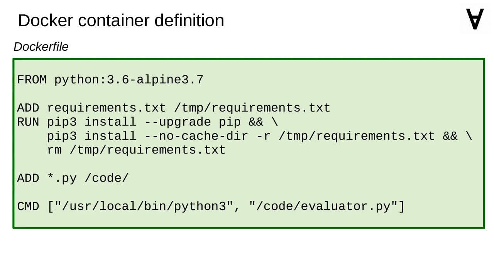

Numerai & ML - Part 6 - Evaluating predictions
Beside automating predictions I also want to get them evaluated. To do that I will use pyinotify to catch every prediction file appearing in the data directory. Then, I will use numerapi to evaluate it.
Let's start first by creating a script responsible for capturing the prediction files.
It will capture the files when they are closed and therefore ready to be uploaded. Each file matching the pattern found in the data directory will be enqueued. I will also collect the files which are already there.
I will use glob to capture all matching files. Then, the thread will run the inotify loop and every matching file will be captured as well.
These files will be served up via a simple interface to the evaluating part of the code.
the evaluation will run it's own thread.
But before the thread is started I need to pass credentials to the Numerai API. You can obtain those if you go over to "Account" on the Numerai website.
Then, click on "Custom API Keys".
Type a name for the key, select the authorization scope and click "Generate New Key".
You will then get the Public ID and the Secret Key which you can use with this container.
Coming back to the evaluator script the main thread will read the paths of the captured prediction files and submit them for evaluation.
First the prediction will be uploaded using Numerai API. Then, the status will be checked periodically to see if the evaluation is complete.
Once the status is ready it will be stored in a JSON file (named after the prediction file).

Just like with explorer the Dockerfile is quite simple. The required modules are installed in the container image, the Python scripts added as well and the evaluator is executed when the container is launched.
Use this command to run the Docker container. Note that it assumes that the current directory is bound as a volume to store all the data. Make sure to pass the credentials and the location of the data volume directory within the container.